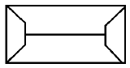
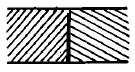
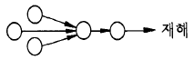

건축일반시공산업기사 (2004-05-23 기출문제)
1과목: 건축일반
1. 도면작도 용구인 디바이더(divider)의 용도와 가장 거리가 먼 것은?
- 축척의 눈금을 제도 용지에 옮길 때
- 원이나 원호를 제도 용지에 그릴 때
- 도면위에 같은 길이의 선을 여러개 표시할 때
- 하나의 직선을 같은 길이로 여러개 분할할 때
(정답률: 알수없음)

2. 제도 문자는 수직 또는 몇 도의 경사로 쓰는 것을 원칙으로 하는가?
- 10°
- 15°
- 20°
- 25°
(정답률: 100%)
3. 건축도면에서 각종 선의 용도로 옳지 않은 것은?
- 이점쇄선-상상선
- 일점쇄선-치수선
- 파선-숨은선
- 실선-단면선
(정답률: 75%)
4. 문자의 크기를 호칭하는 기준은?
- 폭
- 높이
- 나비
- 길이
(정답률: 알수없음)
5. A3 도면을 철할 때 철하는 부분의 테두리 여백은 최소 얼마 이상으로 하는가?
- 10mm
- 15mm
- 20mm
- 25mm
(정답률: 알수없음)
6. 그림과 같은 지붕의 명칭은? (단, 그림은 지붕의 평면도이다.)

- 박공지붕
- 모임지붕
- 합각지붕
- 방형지붕
(정답률: 86%)
7. 콘크리트 구조물의 크리프(creep)변형량에 관한 설명 중 옳지 않은 것은?
- 단위수량이 많을수록 크다.
- 부재의 단면치수가 작을수록 크다.
- 재하시의 재령이 길수록 작다.
- 시멘트량이 많을수록 작다.
(정답률: 90%)
8. 고로시멘트의 특징에 대한 설명 중 옳지 않은 것은?
- 모르타르나 콘크리트에 사용할 때 온도의 영향을 받기 쉽다.
- 해수에 대한 저항이 크다.
- 장기강도는 보통포틀랜드시멘트를 능가하는 경우가 많다.
- 수화열량이 커서 매스콘크리트용으로는 사용이 곤란하다.
(정답률: 80%)
9. 시멘트에 관한 설명 중 옳지 않은 것은?
- 플라이애시시멘트의 장기강도는 일반적으로 보통시멘트를 능가한다.
- 알루미나시멘트는 내화성이 풍부하여 내화물용으로 사용이 가능하다.
- 포틀랜드시멘트의 주원료는 석회석과 점토이다.
- 중용열포틀랜드시멘트는 시멘트의 발열량을 증가시킬 목적으로 제조한 시멘트이다.
(정답률: 70%)
10. 콘크리트 슬럼프 시험을 할 때 시료는 몇 회로 나누어 슬럼프콘에 채워 넣는가?
- 1회
- 2회
- 3회
- 4회
(정답률: 알수없음)
11. 합성수지의 일반적인 특징에 관한 설명으로 옳지 않은 것은?
- 전성, 연성이 크고 가공이 쉽다.
- 공업적으로 대량 생산이 가능하다.
- 내화성이 크다.
- 내수성이 우수하다.
(정답률: 알수없음)
12. 공동도급(joint venture)에 대한 설명으로 옳지 않은 것은?
- 일반적으로 한 회사의 도급공사보다 경비가 감소된다
- 기술의 확충, 강화 및 경험의 증대가 가능하다.
- 공사수급의 경쟁완화수단이 된다.
- 공사의 이윤은 각 회사의 출자비율로 배당된다.
(정답률: 알수없음)
13. 그림과 같은 쪽매의 명칭으로 옳은 것은?

- 맞댄쪽매
- 딴혀쪽매
- 반턱쪽매
- 제혀쪽매
(정답률: 90%)
14. 다음 중 4각형으로 짠 뼈대에 대각선상으로 빗대는 경사재로 목조벽체를 수평력에 견디게 하고 안정한 구조로 하는 데 있어 효과가 큰 부재는?
- 인방
- 토대
- 가새
- 벽선
(정답률: 90%)
15. 웨브에 철판을 쓰고 상하부에 플랜지 철판을 용접하거나 ㄱ형강을 리벳접합한 철골보는?
- 형강보
- 판보
- 래티스보
- 격자보
(정답률: 알수없음)
16. 벽돌구조에 대한 설명 중 옳지 않은 것은?
- 표준형벽돌의 크기는 190mm× 90mm× 57mm이다.
- 이오토막은 화란식, 칠오토막은 영식쌓기의 모서리 또는 끝부분에 주로 사용된다.
- 벽의 중간에 공간을 두고 안팎으로 쌓는 조적벽을 공간벽이라고 한다.
- 내력벽에는 통줄눈을 피하는 것이 좋다.
(정답률: 알수없음)
17. 철골구조의 주각을 구성하는 부재와 관련이 없는 것은?
- 사이드앵글(side angle)
- 윙플레이트(wing plate)
- 비렌딜거더(vierendeel girder)
- 베이스플레이트(base plate)
(정답률: 알수없음)
18. 공사금액을 구성하는 물공량(物工量), 또는 단위공사부분에 대한 단가만을 확정하고 공사가 완료되면 실시수량의 확정에 따라 청산하는 도급방식은?
- 일식도급
- 분할도급
- 정액도급
- 단가도급
(정답률: 알수없음)
19. 다음 입찰집행사항 중 가장 먼저 해야 하는 것은?
- 낙찰
- 개찰
- 입찰
- 계약
(정답률: 알수없음)
20. 조적식 구조에 속하지 않는 것은?
- 블록조
- 석조
- 철근콘크리트조
- 벽돌조
(정답률: 알수없음)
2과목: 조적, 미장, 타일시공 및 재료
21. 수 시간부터 십수 시간내에 보통포틀랜드시멘트의 28일 재령에 필적하는 강도를 발현시키므로 긴급공사에 이용되는 시멘트는?
- 플라이애시시멘트
- 실리카시멘트
- 고로시멘트
- 알루미나시멘트
(정답률: 93%)
22. 바닥 테라조 바름에서 정벌바름의 적당한 바름 두께는?
- 6 mm
- 8 mm
- 15 mm
- 20 mm
(정답률: 60%)
23. 콘크리트 바탕 외벽에서 시멘트모르타르 초벌바름의 표준두께로 적당한 것은?
- 5mm
- 7mm
- 9mm
- 12mm
(정답률: 알수없음)
24. 석고 플라스터 미장에 관한 기술 중 옳지 않은 것은?
- 응결, 경화에 의한 수축이 거의 없다.
- 원칙적으로 해초 또는 풀즙을 사용하지 않는다.
- 약산성이므로 유성페인트 마감을 할 수 있다.
- 응결시간이 길다.
(정답률: 알수없음)
25. 콘크리트바탕의 외벽에 시멘트모르타르 바름할 때 초벌바름의 표준 용적배합비는?(시멘트:모래)
- 1:1
- 1:2
- 1:3
- 1:5
(정답률: 알수없음)
26. 킨즈시멘트(Keen's cement)의 주원료는?
- 생석회
- 무수석고
- 소석회
- 백색시멘트
(정답률: 55%)
27. 다음 미장재료 중 수경성 재료는?
- 회반죽
- 돌로마이트 플라스터
- 석고 플라스터
- 석회크림
(정답률: 80%)
28. 타일붙이기 바탕처리에 관한 설명 중 옳지 않은 것은?
- 타일 붙임바탕은 고르게 살을 입혀 평탄하게 한다.
- 바탕은 미끈 할수록 좋다.
- 적당히 물축이기를 한다.
- 레이턴스, 먼지 등을 깨끗이 청소한다.
(정답률: 80%)
29. 내장벽에 타일을 떠붙이기공법으로 붙일 때 붙임모르타르의 두께의 표준은?
- 6 ~ 9mm
- 10 ~ 12mm
- 12 ~ 24mm
- 25 ~ 30mm
(정답률: 알수없음)
30. 타일을 붙인후 접착력 시험을 할 경우 붙임면적 몇 m2 마다 한 장씩 하는가?
- 100mm2
- 200m2
- 400m2
- 600m2
(정답률: 알수없음)
31. 타일공사에서 바탕 모르타르를 바른 후 타일을 붙일 때까지는 여름철(외기온도 25℃이상)의 경우 최소 얼마 이상의 기간을 두는가?
- 3∼4일
- 5∼7일
- 9∼10일
- 11∼14일
(정답률: 70%)
32. 타일공사에 관한 기술 중 옳지 않은 것은?
- 타일은 파손되기 쉬우므로 취급에 주의를 요한다.
- 타일의 빛깔이 차이가 있을시 분산 배치한다.
- 흡수성이 큰 타일은 물축이기를 한다.
- 바탕모르타르 바름이나 콘크리트의 표면을 충분히 건조시킨후 붙인다.
(정답률: 84%)
33. 치장줄눈을 하기 위해 실시하는 줄눈파기는 타일를 붙인 후 몇 시간 경과한 후 하는가?
- 7시간
- 5시간
- 3시간
- 1시간
(정답률: 91%)
34. 타일 붙임시 바탕면의 평활도는 바닥의 경우 3m당 얼마이내로 해야 하는가? (떠붙이기가 아닌 경우)
- ± 2 mm
- ± 3 mm
- ± 5 mm
- ± 7 mm
(정답률: 알수없음)
35. 자기질 타일의 흡수율로 가장 적당한 것은?
- 0 ~ 1%
- 3 ~ 10%
- 10 ~ 12%
- 20 ~ 25%
(정답률: 82%)
36. 클링커타일 치수 10㎝× 10㎝을 사용시 1m2에 소요되는 장수는? (단, 정미량, 줄눈 나비는 10mm)
- 45장
- 60장
- 83장
- 113장
(정답률: 80%)
37. 미장공사에서 시멘트 모르타르로 천장이나 차양을 바름시 총바름 두께의 표준은?
- 6mm
- 12mm
- 15mm
- 18mm
(정답률: 알수없음)
38. 캐스트 스토운(Cast Stone)은 어느 것을 말하는가?
- 인조석 잔다듬
- 인조석 씻어내기
- 테라조(terrazzo)바름
- 인조석 갈기
(정답률: 80%)
39. 대형(내부일반용)타일의 붙임시 표준 줄눈나비는?
- 1 ~ 2mm
- 3 ~ 4mm
- 5 ~ 6mm
- 7 ~ 8mm
(정답률: 75%)
40. 나무졸대 바탕의 회반죽벽 바름공사에서 1m2당 품수(미장공과 인부)는 다음 중 어느 것이 가장 알맞는가?
- 0.3인
- 0.5인
- 0.7인
- 0.9인
(정답률: 알수없음)
3과목: 안전관리
41. 모르타르 미장바름에서 배합용적비 1:3 모르타르 배합시 1m3 당 인부 몇 명이 필요한가?
- 0.5
- 1
- 1.5
- 2
(정답률: 75%)
42. 테라죠바르기에서 균열방지를 위하여 설치하는 줄눈의 최대 간격은?
- 0.5m
- 1m
- 1.5m
- 2m
(정답률: 90%)
43. 메탈라스 바탕에 사용하는 메탈라스의 힘살은 지름 몇 mm 이상의 강선으로 하는가?
- 1.2mm 이상
- 1.6mm 이상
- 2.0mm 이상
- 2.6mm 이상
(정답률: 알수없음)
44. 석고 플라스터 바름에서 바탕과 초벌바름두께의 연결이 옳지 않은 것은?
- PC 패널 천장→ 6mm
- 콘트리트 블록벽→ 9mm
- 콘크리트 천장→ 9mm
- 석고보드 벽→ 6mm
(정답률: 알수없음)
45. 시멘트 보관에 관한 사항 중 틀린 내용은?
- 보관 창고는 환기창을 설치할 필요가 없다.
- 쌓기 최대 높이는 13포대를 초과하지 않는다.
- 장기간 저장할 경우는 7포대 이상 쌓지 않는다.
- 1m2당 50포대가 가장 적합하다.
(정답률: 80%)
46. 바닥타일 붙이기에 관한 사항 중 틀린 것은?
- 타일을 붙인 후 3일간은 진동이나 보행을 금한다.
- 벽체타일이 시공되는 경우 바닥타일은 벽체타일을 붙이기 전에 먼저 시공한다.
- 붙임 모르타르의 1회 깔기면적은 6~8m2로 한다.
- 타일붙임 면적이 클 때는 2~2.5m2 내외에 규준타일을 먼저 붙여 이에 따라 붙여 나간다.
(정답률: 75%)
47. 타일의 주용도로 가장 알맞은 것은?
- 외벽의 차단재
- 바닥면의 구조재
- 천정의 흡음재
- 내외벽의 수장재
(정답률: 알수없음)
48. 15층 패러펫(24,000× 1,200mm)에 압착공법으로 150각 석기질타일을 붙이려 한다. 소요되는 타일공은 몇 명인가?
- 6명
- 9명
- 7명
- 11명
(정답률: 73%)
49. 타일 나누기에 대한 설명으로 옳지 않은 것은?
- 수도 파이프 위치는 타일의 중앙에 위치하도록 한다.
- 가능한 한 온장을 쓸 수 있도록 나누기 한다.
- 지나치게 작은 크기의 조각타일이 생기지 않도록 한다.
- 도면에 명기된 치수에 상관없이 징두리벽은 온장 타일이 되게 나누어야 한다.
(정답률: 91%)
50. 타일벽면시공시 백화현상이 발생하는 원인과 가장 관계가 먼 것은?
- 붙임 모르타르의 과다사용
- 혼합시멘트의 다량사용
- 치장 줄눈의 불량시공
- 구조체의 붙임 바탕 균열
(정답률: 90%)
51. 산업재해를 조사하는 사람으로서 유의할 점으로 옳은 것은?
- 재해를 조사할 때에는 책임을 추궁하는 방향으로 실시하여야 한다.
- 과거의 사고 경향, 사례, 조사기록 등을 참고하여 조사하여야 한다.
- 주관적인 입장에서 조사할 것이며, 어떠한 편견을 가지고 조사해서는 안된다.
- 피해자에 대한 조사자의 기본적 태도는 동정적이면서도 피해자의 입장을 이해하여서는 안된다.
(정답률: 59%)
52. 다음 중 특수기능에 속하지 않는 것은?
- 지각능력
- 지적능력
- 운동능력
- 손과 눈의 협동능력
(정답률: 70%)
53. 다음 그림과 같은 재해발생의 모형은?

- 집중형
- 사슬형
- 연쇄형
- 복합형
(정답률: 73%)
54. 어떤 화학공장에서 300명의 근로자가 1년동안 작업하는데 안전사고 30건이 발생하였다. 재해 도수율은?
- 41.67
- 38.75
- 37.5
- 31.25
(정답률: 64%)
55. 소음최대 허용기준값 중 소음노출시간(1일)이 8시간인 것은 몇 ㏈인가?
- 70 ㏈
- 90 ㏈
- 110 ㏈
- 130 ㏈
(정답률: 알수없음)
56. 다음 중 재해예방의 3원칙이 아닌것은?
- 기술적 대책
- 교육적 대책
- 관리적 대책
- 사고통제 대책
(정답률: 알수없음)
57. 가연성 액체의 화재에 사용되며, 전기기계, 기구 등의 화재에 효과적이며, 소화한 뒤에도 피해가 없는 것은?
- 산· 알칼리 소화기
- 강화액 소화기
- 이산화탄소 소화기
- 포말 소화기
(정답률: 알수없음)
58. 인간에게 영향을 미치는 환경조건이 아닌 것은?
- 습도
- 온도
- 혈압
- 공기
(정답률: 90%)
59. 보호구 선택시 주의사항으로 옳지 않은 것은?
- 사용목적에 적합해야 한다.
- 쓰기 쉽고, 손질이 쉬워야 한다.
- 사용자에게 잘 맞아야 한다.
- 외관 및 미관을 우선하여 선택한다.
(정답률: 알수없음)
60. 사고 발생의 원인은 불안전한 행동이 불안전한 작업 조건보다 훨씬 더 높은 비중을 차지하고 있다는 점을 제시한 사람은?
- 미국의 하인리히(Heinrich)
- 미국의 밀 워키
- 독일의 빌 헬름
- 이탈리아의 라마치니
(정답률: 알수없음)